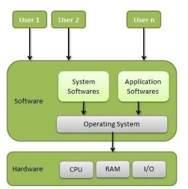

Need For Operating System
Operating System:

An Operating System is a type of system software that acts as an interface between the end user and the computer hardware. Every computer must have at least one Operating System to run other programs. It handles essential tasks such as file management, memory management, process management, input/output operations, and controlling peripheral devices.
Examples of popular Operating Systems include Linux, Windows, and Android (for mobile devices).
Need for Operating System:
The main purpose of a computer system is to run user programs and make tasks easier. The following points explain why an Operating System is needed:
- It makes it easy for humans to interact with the computer.
- It helps start the computer automatically when the power is switched on.
- It loads and schedules user programs to run.
- It controls input and output devices.
- It manages the execution of programs.
- It controls the use of the main memory.